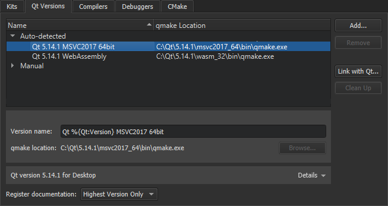
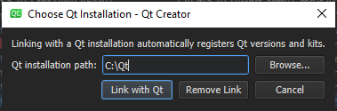

Adding Qt Versions
Qt Creator allows you to have multiple versions of Qt installed on your development PC and use different versions to build your projects. For example, device manufacturers provide special Qt versions for developing applications for their devices.
Registering Installed Qt Versions
Qt Creator automatically detects the Qt versions that are registered by your system or by the Qt Installer. To view detailed information for each Qt version, select it in the list and select Details in the Qt version for section.

To remove invalid Qt versions, select Clean Up.
You can link to a Qt that you installed using the Qt Maintenance Tool to automatically register the installed Qt versions. However, you cannot link to Qt versions that were installed by the system using some other package manager, such as your Linux distribution, brew on macOS, or Chocolatey on Windows, nor a self-built Qt. In those cases, select Add in the Qt Versions tab to add the Qt version manually, as instructed in Setting Up New Qt Versions.
To link to a Qt installation:
- Select Tools > Options > (or Qt Creator > Preferences on macOS) > Kits > Qt Versions > Link with Qt.

- In the Qt installation path field, enter the path to the directory where you installed Qt.
- Select Link with Qt to automatically register Qt versions and kits in the Qt installation directory.
- Select Restart Now to restart Qt Creator.
To remove the automatically detected Qt versions from the list, select Remove Link.
If a Qt version is still not listed in the Qt Versions tab under Auto-detected, you have to set it up manually, as described in the following section.
You specify the Qt version to use for each kit for building and running your projects in Tools > Options > Kits, as described in Specifying Kit Settings.
Setting Up New Qt Versions
To add a Qt version:
- Select Tools > Options > Kits > Qt Versions > Add.
- Select the qmake executable for the Qt version that you want to add.
- Select the Qt version to view and edit it.
- In the Name field, edit the name that Qt Creator suggests for the Qt version.
- In the qmake path field, you can change the qmake location.
- If the Qt version is for QNX, enter the path to your installed QNX SDK in the QNX SDK field.
To remove a Qt version that you added manually, select it in the Manual list and then select Remove.
Registering Documentation
By default, Qt Creator registers only the latest available version of the documentation for each installed Qt module.
To register the documentation sets of all installed Qt versions, choose All from the Register documentation list. To register no Qt documentation at all, choose None. The default behavior is Highest Version Only.
Troubleshooting Qt Installations
If Qt Creator detects problems in the installation of a Qt version, it displays warnings and errors beside the name of the Qt version in the list. Select the Qt version to see more information about the issue and suggestions for fixing it.
To determine whether a particular Qt version is installed correctly, Qt Creator calls qmake -query and checks that the directories referenced in the output exist. When Qt Creator complains about the installation of a self-built Qt version, try running make install in the build directory to actually install Qt into the configured location. If you installed Qt using the Qt Installer, run the Qt maintenance tool to check for updates or to reinstall the Qt version.
Minimum Requirements
If your build of Qt is incomplete but you still want to use QMake as build system, you need to ensure the following minimum requirements to be able to use that setup with Qt Creator.
- qmake is an executable that understands the
-querycommand line argument. - The
binandincludedirectories have to exist. Qt Creator fetches these directories by runningqmake -query. - The
mkspecsdirectory should be complete enough to parse .pro files.
If your Qt version has no libQtCore.so, Qt Creator is unable to detect the ABI.